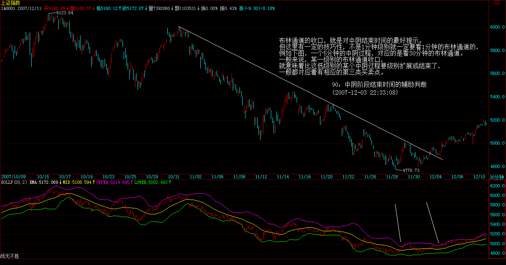

Walter:
-
中阴段结束时间(布林通道)：
- 从上轨之上跌破上轨，这时，如果上涨创新高，但不能再次回到上轨之上，就是第一类卖点，中阴开始；
- 从下轨之下涨过下轨，这时，如果下跌创新低，但不能再次回到下轨之下，就是第一类买点，中阴开始；
-
中阴段结束时间:
- 中阴结束时间对应了布林通道的收口；
- 5分钟的中阴过程，对应的是30分钟的收口。（通过高一级别的图判断）
- 布林通道是辅助作用，最终将以第三类买卖点形成为准。
-
第二类买卖点的辅助判断：（注意和判断中阴结束时间区别，这里看同一级别的图，不是看高一级别的图）
- 第一次回跌（第一类卖点）之后，再次向上时，上轨成为最大的阻力，使得第二类卖点在其下形成；
- 第一次回升（第一类买点）之后，再次向下时，下轨驰为最大的支撑，使得第二类买点在其上形成；
正文
(2007-12-03 22:33:08)
原文网址：http://blog.sina.com.cn/s/blog_486e105c01000eor.html
注意，这里给出的是中阴阶段结束时间的辅助判断，并不是一个绝对性的判断，如同用MACD判断背驰一样，只是一个辅助性，但由于准确率极高，绝对的判断反而因为太复杂而不实用，所以就可以一般性地利用这进行判断。一般来说，这个中阴阶段结束时间的辅助判断的有效性可以达到接近100%，很少有例外。
当然，由于是辅助性判断，所以技巧性与熟练程度就很关键了。这就如同玩杂技，训练有素的上台出错的几率很小，而一个训练都没有的一上台肯定出错。
这个辅助判断，可以利用所有软件都有的一个指标：布林通道。一般在软件上都用BOLL表示。该指标一般都三条线，上、中、下三个轨道。一般性地，在上轨以上和下轨以下运行是超强状态，一般中枢移动时肯定会出现，唯一区别是前者是上涨超强，后者是下跌超强。
注意，用这个指标有一个很好的辅助判断第二类买卖点，有时候也可以用来判断第一类买卖点。一般来说，从上轨上跌回其下或从下轨下涨回其上，都是从超强区域转向一般性区域，这时候，如果再次的上涨或回跌创出新高或新低但不能重新有效回到超强区域，那么就意味着进入中阴状态了，也就是第一类买卖点出现了。
但更有效的是对第二买卖点的辅助判断，一般来说，在进入中阴状态，上轨和下轨都会滞后反应，也就是等第一次回跌(或回升)后再次向上(或下跌)时，上轨和下轨才会转向，而这时候转向的上轨和下轨，往往成为最大的阻力和支持，使得第二类买卖点在其下或其上被构造出来。一个例子，就是上海大盘在6004点时构成的第二类卖点，还有一个例子就是6月20日那天的第二类买卖点。
个股方面，000938是一个经典的例子，9月14日的第一类卖点，10月8日的第二类卖点，太教科书了。000999的10月10日的第一类卖点以及11月6日的第二类卖点，也同样教科书。这些例子太多，而且在不同的级别中都一样有效。
注意，有人可能说本ID上面那两个例子都是自己的股票，那肯定对。其实，别的股票更准确，例如000002，这股票够大众情人了，请看他的周线，40.78元那周，看看究竟发生了什么事竟然构成了周线的第一卖点？
不过，布林通道最有用的，还是关于中阴结束时间的预判上。一般来说，布林通道的收口，就是对中阴结束时间的最好提示。但这里有一定的技巧性，不是1分钟级别就一定要看1分钟的布林通道的，例如下图，一个5分钟的中阴过程，对应的是看30分钟的布林通道。
一般来说，某一级别的布林通道收口，就意味着比这低级别的某个中阴过程要级别扩展或结束了，一般都对应着有相应的第三类买卖点。
(注：当布林通道变窄收口的时候，震荡走势结束的可能性大。但布林通道无法给出明确的突破时机以及突破方向的指示，只有辅助的作用，最终走势的突破应以第三类买卖点为准。)

下图这个例子请好好研究一下，里面还有下午说的那条下降通道，可以看到，现在离这个上轨有多接近。
注意，这个辅助判断，比MACD那个技巧性还要高点，必须不断看图，自己去总结自己的经验才会有所得。本ID这里只是把月亮指给各位，要把月亮变成自己的，还需要自己去努力。
突破回抽，明后是关键 (2007-12-04 15:29:26)
原文网址：http://blog.sina.com.cn/s/blog_486e105c01000eoy.html
今天大盘略微发了点力，突破6004点下来的下降通道上轨，但受阻于10日线，不过其后的回落并没有跌回上轨之下，因此，暂时还是一个可接受的局面。一般来说，突破后需要3天确认，因此明后就是关键了。
其实，今天大盘之所以比较犹豫，就是因为昨天开始的那经济会议还没有明确的结论性东西，现在贸然发力，万一有什么不招人待见的东西出现，那不是自讨没趣吗？所以在这里突破反抽地耗点时间，并不是太坏的事情。
这会议的精神，很快就会明确，这决定了短线大盘的走势。但无论结论是怎么样，最终都会制造出一波针对6124点下来第一波调整的大反抽，这个结论是必然的。唯一的区别就是昨天所说的是否先有一空头陷阱的问题。
由于目前成交太小，市场本身的合力太弱，而消息的力量在这时候特别容易放大，所以走势上如果要特别细致地判断，不能忽视这会议消息的力量。但如果只需要知道大方向性的东西，那对这会议也无须太过看重，就算有什么特别的东西，也就多制造一个空头陷阱的问题。
大盘大反抽的最终确立，以10日线的站稳为标志。
个股方面，很多中低价格股票都开始启动了，所以指数的意义不太大，不过一旦指数启动，要小心又是9119地折腾。
对这个反抽的定性一直都很明确，就是反抽，其后还需要第二次探底去确认底部。当然，如果这次是先再一个空头陷阱再起来，这样下次的确认就不一定要再破底，因为可以走成所谓的双底，否则，破底并不是太奇怪的事情。
先下，再见。
长阳突破10日线，大反抽确立。 (2007-12-05 15:20:16)
原文网址:http://blog.sina.com.cn/s/blog_486e105c01000ep7.html
本来今天该用红字的，但为了让各位冷静点，还是用绿字比较好。毕竟，这本ID反复强调马上要来的大反抽后还至少有一个探底确认的过程，所以冷静是必须的。
不过，现在这反抽刚确认，我们还是先探讨这反抽本身的问题。昨天明确说了“大盘大反抽的最终确立，以10日线的站稳为标志。”今天早上前30分钟，这10日线就被攻克了，然后后面的上涨，就是顺理成章的事情了。
从这次对下降通道上轨的突破，然后再回抽确认，然后再突破10日线最后确认，这一切都是极端教科书化的，这种情况，在以后都会反复遇到。光这次对了没用，还要知道为什么，以后碰到类似情况就会处理了，不需要本ID再废话了。
明天，关键是5010点，这是这次小双底的颈线位置，只要这位置站住，那么就有攻击双底基本升幅的潜力。
站在中枢震荡的角度，前面本ID说5000点下的空头陷阱，最终要形成一个更大级别的中枢震荡，其实在重新站上5032点前，都不能说是事实。而今天，这玩意终于事实了。后面就看这个大级别的中枢如何震荡了。
站在缺口的角度，日线上11月21、22日这个向下缺口的回补是必须首先要去完成的事情，如果连这都完成不了，那这反抽的力量就太弱了。
如果站在最好的角度，那么这个反抽如果能先到5462点，然后再回调确认，这样就构成一个小的头肩底形态，这是最有力量的走法了，当然，能否走成这样，需要多方面的配合。
总之，反抽确立后，就看着走势来，没必要事先把自己框在某种走势中，最好的操作，还是先以中枢震荡的观点，只是这次级别比较大，是30分钟的，因此只要次级别5分钟向上背驰了，就可以先出来看看，回来如果还能保持中枢震荡，那就重新进去。（当然，你手脚特麻利的，也可以看1分钟的。）
当然，看不明白的，就看5日线，只要5日线不破，那么大盘就继续保持反抽的潜力。
要去那恶心的太监村一趟，忒堵车，必须马上走了，先下，再见。
5010点的回抽确认 (2007-12-06 15:17:59)
原文网址：http://blog.sina.com.cn/s/blog_486e105c01000epm.html
今天按昨天所说的，全天就是对5010点的回抽确认。其实，如果心思缜密的，就知道，今天下午突然下破5010点的走势，就是一个典型的小空头陷阱。
这里顺便上上课，前面说过，明白陷阱，你的技术水平就会高多了。什么是陷阱？陷阱必须由中枢而来，所谓陷阱，归根结底都是中枢震荡的结果。如果不是中枢震荡，而是中枢移动，那就不可能是陷阱，而是真陷进去了。
今天早上高开线段回落，然后再线段向上，根据走势必完美的原则，肯定就在该位置有一个1分钟中枢了。有了这个中枢的大概位置，就有了制造陷阱的可能。一般这种小陷阱，都是制造盘中高低点的，一般就是故意打破某个位置，例如今天就是第一下跌段的低点，但这个下破制造的笔和前面的笔一比较力度就知道肯定是陷阱了。
陷阱与非陷阱最关键的区别，除了是否中枢震荡外，就是力度上的前后比较问题了，这需要好好去研究，真研究明白，变成自己的直观，那才真有用的。

技术不说了，由于明天是周末，因此，那一直的周末心理效应就看有多大了，只要明天以及周一开始都能站住5010点上，走势就没什么问题。
在这个位置停留的最大心理意义在于，让犹疑的人有一个心理转变的时间，争取更多的人。反弹行情，就是一个逐步忽悠的过程，不可能是主力一直拉到底的过程，通俗讲，做反弹，就是要逐步掂上去，在一个新的水平，等足够多的人认同了，再掂高一点，等哪天认同减少或风声不对，就突然过河拆桥，这样，主力才有可能全身而退。否则都是主力自己拉，那不是送死吗？
技术不行的就继续看5日线。
先下，再见。
5010点站稳，行情继续展开 (2007-12-07 15:17:09)
原文网址：http://blog.sina.com.cn/s/blog_486e105c01007sm1.htmlz
今天真没什么可说的，早上再次回试5010点，结果在5021点就被拉起，而且还是在周五，说明市场心态还是比较反弹行情的继续展开的，其后的走势，就是理所当然的事情了。
其实现在的走势，根本无须过于细致地看每天的盘，因为日线上一早就确定一定至少走一笔出来了，因此，在一个日线的顶分型确立之前，行情就会一直延续。而且日线上一笔过后，还可以看是否延伸出笔的上涨来，所以，只要行情不走出相应的形态，都可以持股待涨。
学本ID的理论，一定要学会不同级别的通盘考虑。
下周的关键，就是5周线已经能否制造周线的底分型。由于本周没到上周的高位上，只搞了一个包含关系，所以要底分型，还要看下周。
个股方面，没什么可说的，现在基本是普涨状态，因为很多前面做空的，都陆续有点回补，所以就比较平均。关键是突上去以后，就需要领涨板块了。所以普涨后是否形成领涨板块的市场共识，决定了行情最终的高度。
不说了，周末，出去腐败吧。
本ID要去山里泡泡温泉，可惜北京一直没有雪，真怀念在雪地里泡温泉数星星的日子呀。
先下，再见。

5010点站稳，行情继续展开。 (2007-12-07 15:22:50)
奇怪，刚写的文章发出来怎么没有了？再写一遍太累了，简略说说。
今天站稳5010点，行情就理所当然地继续展开。现在其实只要看好日线就可以，因为日线上必然形成笔，而该笔必然结束于顶分型，换言之，在日顶分型出现前，都不会有行情的结束，就算你是最急噪的人，也先等日分型出现再说了。
周线上，本周是包含关系，所以下周关键是构成周的底分型。
个股目前的普涨走势，行情要大发展，必须有领涨板块，这是后面的关键所在。
周末，都去休息吧，本ID也要去山里泡温泉。可惜北京最近一直没雪，真怀念在雪地里泡温泉数星星的日子。
先下，再见。